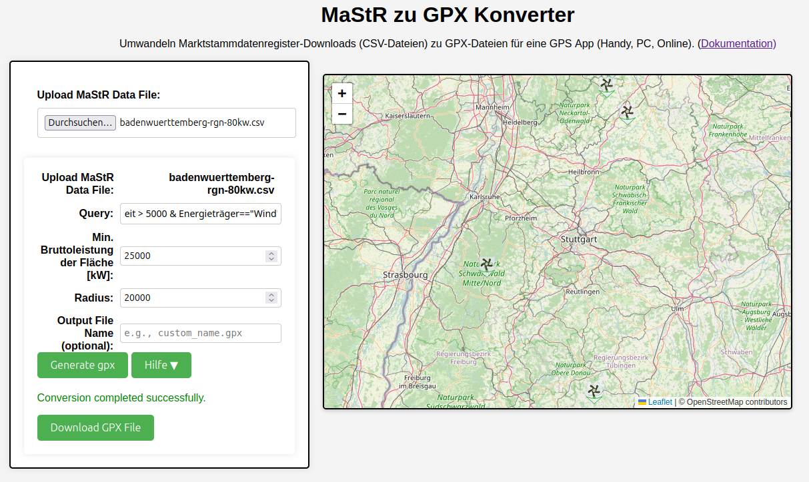
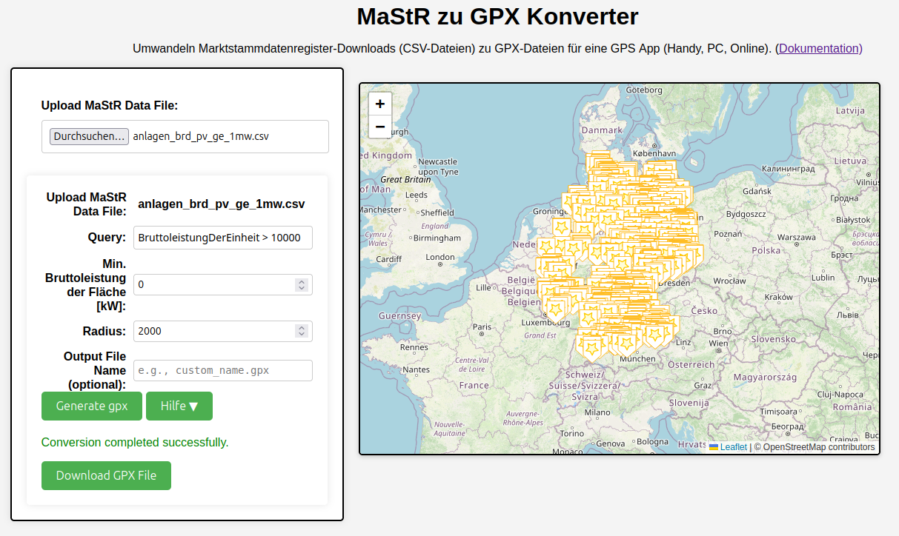
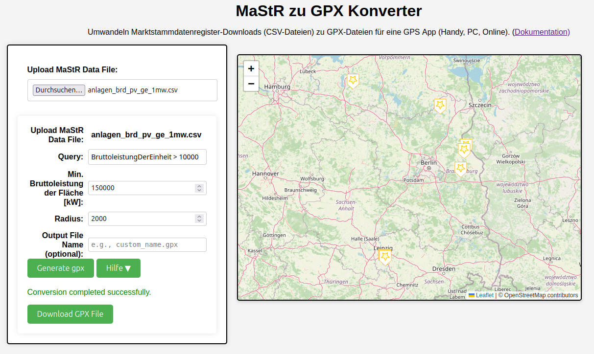
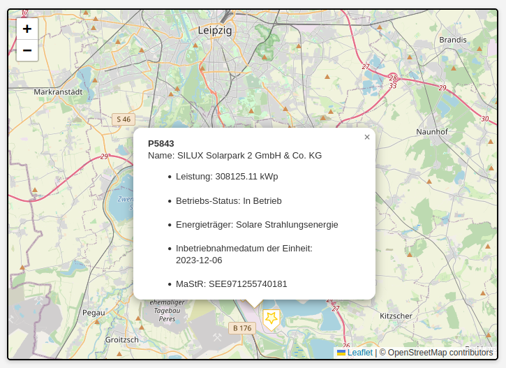
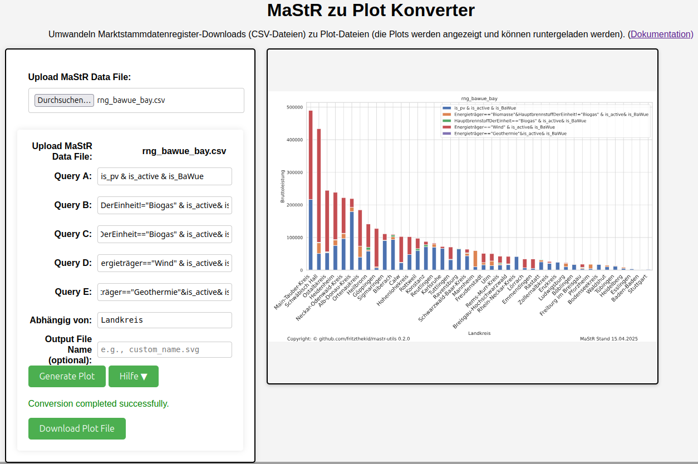
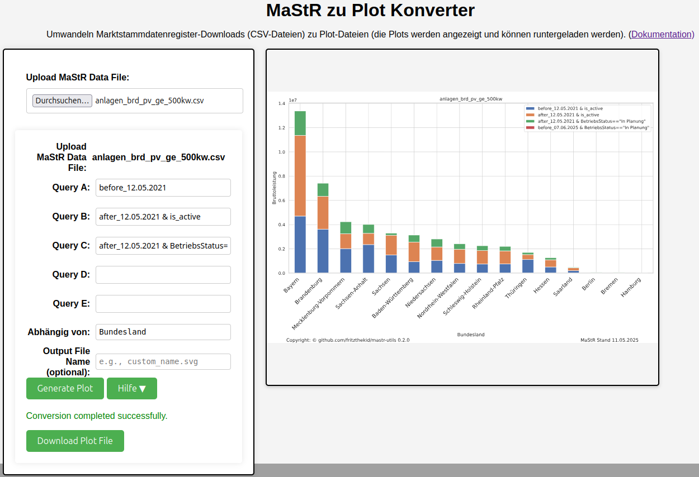
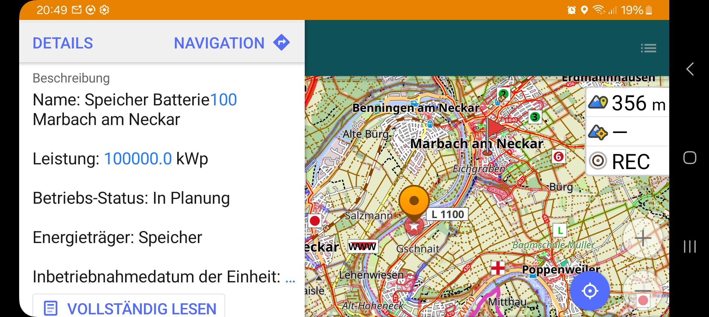
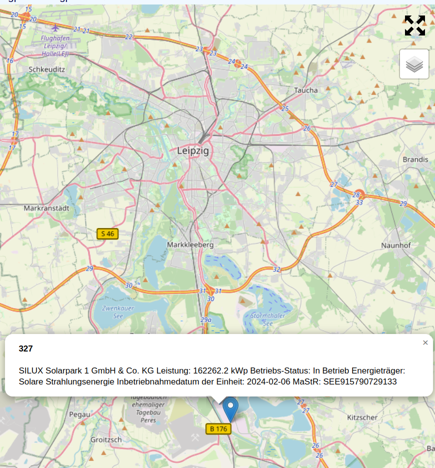
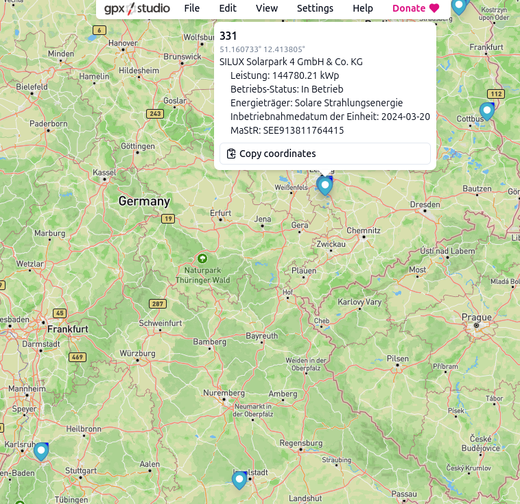
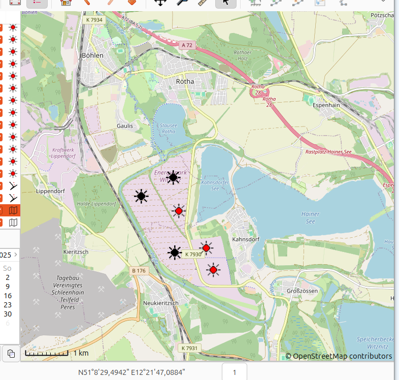

Das wichtigste: Diese Tools und die Webanwendung werden angeboten wie in der LICENCE angegeben. Es gibt keine Gewähr, keinen Support oder ähnliches.
Dieses Repository enthält Tools zur Auswertung der Daten des Marktstammdatenregisters (MaStR). Derzeit sind folgende Anwendungen verfügbar:
Mit der Anwendung sollten in erster Linie große Windparks oder Solaranlagen gefunden werden. Für diese Anlagen gilt in der Regel, dass diese Stromerzeugungseinheiten in der Regel aus vielen Einheiten bestehen.
Hinweis: Am 31.03.2025 lieferte eine solche Abfrage beispielsweise 844 Anlagen (sowohl in Betrieb als auch in Planung).
Downloads/Stromerzeuger.csv.Bei flächiger Suche werden die Anlagen zusammengefasst und die Eigenschaften einer dieser Anlagen ausgegeben (allerdings mit der Gesamtbruttoleistung aller Anlagen.)
Anschließend kann das gewünschte gpx file runtergeladen und in z.b. eienr Handy-App verwendet werden.
Hier endet die Beschreibung der Web Applikation
Drücke Convert
Es sollten jetzt auf der rechten Seite sämtlichen c.a. 700 Einheiten dargestellt sein.
 10MW in Deutschland">Einzige Unterschied zur obigen Eingabe ist die Eingabe einer Min. Bruttoleistung.
Dort kann dann 150000 [kW] stehen, erst jetzt wird der Radius relevant. Die Karte wird jetzt deutlich übersichtlicher:
 150MW in Deutschland">Werte über 200kW reduzieren sich die Anlagen auf die deutschlandweit größte Anlage bei Leibzig.
 200MW in Deutschland">Zugriff auf die Anwendung: Öffne den Webbrowser und navigiere zur Webanwendung unter der Adresse:
http://localhost:5000 erfolgen.Reiter: MaStR-2-Plot
Zunächst unterscheidet sich mastrtoplot von mastrtogpx gering, allerdings wird mit diesem Tool eine Vektorgraphik mit akkumulierter Bruttoleistung abhänging von einer Zielgröße (z.B. Bundesland, Landkreis, Postleitzahl oder einer anderen Kategorie) ausgegeben.
Als erstes Beispiel soll die pv Leistungen in Segmenten summiert werden. Also im Interval zwischen 1MW und 10MW, 10MW und 100MW, sowie größer 100MW. Für die 10er Potenzen bei den Bruttoleistungen gibt es Abkürzungen:
Beispiel 2 liefert die Anteile von Leistungen pro Energieträger (nur "Solare Strahlungsenergie", "Biomasse (nicht Biogas)", "Biogas", "Wind") pro Landkreis. Dieser Marktstammdatenregisterauszung:
(kurze Anmerkung: is_pv steht für Energieträger="Solare Strahlungsenergie")
Der Plot kann runtergeladen oder durch anklicken in eigenem Tab geöffnet werden.
Es soll die pv Leistung vor oder nach einem bestimmten Datum ermittelt werden, an dem die Einheit das erste Mal erwähnt wird. Dafür gibt es die Operatoren:
before_DD.MM.YYYY und after_DD.MM.YYYY
Eine solche Abfrage könne dann aussehen:
Die Online-Hilfen sind beschränkt auf einer Charakterisierung der Daten nach Leistung, Energieträger, Betriebsstatus, gibt es auch bereits online Hilfen zu auf den Seiten.
Aus software technischen Gründen wird z.B. der Begriff Bruttoleistung der Einheit zu BruttoleistungDerEinheit. Es können alle Begriffe in dieser Art, die im csv Header stehen verwendet werden.
Die Querys können Operatoren wie in den meisten Programmiersprachen enthalten also (& für und | für oder u.s.w.) Ein Ausdruck muss dabei aber immer die Form haben Spaltenkopf == "Typ", anstelle von "Typ" und nicht 'Typ'. Im Fall von können auch >, <, <= oder >= als Operatoren verwendet werden.
Das heißt die Abfrage:
BruttoleistungDerEinheit > 1000 ist identisch zu ge_1mw.
Weiter gibt es noch Abkürzungen für:
is_active: Betriebsstatus == "in Betrieb"
git clone https://github.com/fritzthekid/mastr-utils.git
cd mastr-utils
python3 -m venv venv source venv/bin/activate # Für Unix-/Linux-Systeme venv\Scripts\activate # Für Windows-Systeme
pip install -e .
Die Nutzung des Tools mastrtogpx wird wie oben beschrieben durchgeführt.
Die kleine Hilfe liefert die Argumente:
mastrtogpx -h
Ergebnis ist eine gpx-Datei. Diese kann dann z.B. auf einer Handy-App genutzt werden.
usage: mastrtogpx [-h] [-q QUERY] [-o OUTPUT] [-c COLOR] [-m MIN_WEIGHT] [-r RADIUS]
[-a] [-s] [-h_query]
mastr_file
Das mastr_file ist die Datei, die vom MaStR-Server heruntergeladen wurde.
Dann können noch weitere Einschränkungen über eine Query spezifiziert werden.
So dass schließlich in einer Datei mit allen Anlagen (auch Öl und Gas) einer Stadt die jeweils
interessanten untersucht werden können. Die Suchkriterien können mit der Option -s angezeigt werden. Typische Beispiele finden sich über die Option
-h_query. Die Punkte können mit einer Farbe markiert sein (nicht alle Tools
unterstützen die Anzeige). Für die Solarparks und Windparks gibt es zwei weitere
Optionen: Mit -r wird ein Suchradius (um jeden Punkt) beschrieben (Standard 1 km), mit -m eine weitere Mindestschwelle für die Bruttoenergie-Leistung des Parks. Übersteigt die Summe der Bruttoleistungen aller Anlagen im Radius den Wert, wird ein Zentrum markiert.
mastrtogpx '~/Downloads/Stromerzeuger(15).csv' -o tmp/alles.gpx
(Das File ~/Downloads/Stromerzeuger(15).csv enthält alle größeren Anlagen im Landkreis Ludwigsburg.)
Diese Information ist geeignet, um schnell alle Anlagen in der Region zu finden und die wichtigsten Faktoren zu ermitteln.
mastrtogpx '~/Downloads/Stromerzeuger(15).csv' -q 'is_battery & BruttoleistungDerEinheit > 10000 & (BetriebsStatus != "Endgültig stillgelegt")' -o tmp/speicher.gpx -c Red
Dieses Beispiel hilft, den Stromspeicher in Marbach genauer zu lokalisieren. Geeignet für die nächste Fahrradtour. Das Ergebnis wird unten mit Hilfe der Handy-App OSMAnd dargestellt.
mastrtogpx '~/Downloads/Stromerzeuger(17).csv' -q 'is_pv & BruttoleistungDerEinheit > 10000 & (BetriebsStatus != \"Endgültig stillgelegt\")' -m 90000 -r 1000 -o tmp/ge_90_1000.gpx -c Black
Das Zurechtfinden der wirklich großen Solarparks hilft die folgende Suche und das Ergebnis. (Siehe auch Online-Betrachter sowie Viking als PC-Tool)
  Hier sind Links zu einigen Online-Viewern:
Dieses Projekt steht unter der BSD-Lizenz.
Für das Logo gilt die CC BY-SA 4.0 Lizenz
https://commons.wikimedia.org/wiki/File:Eyes-blitz.svg
{kind=link}